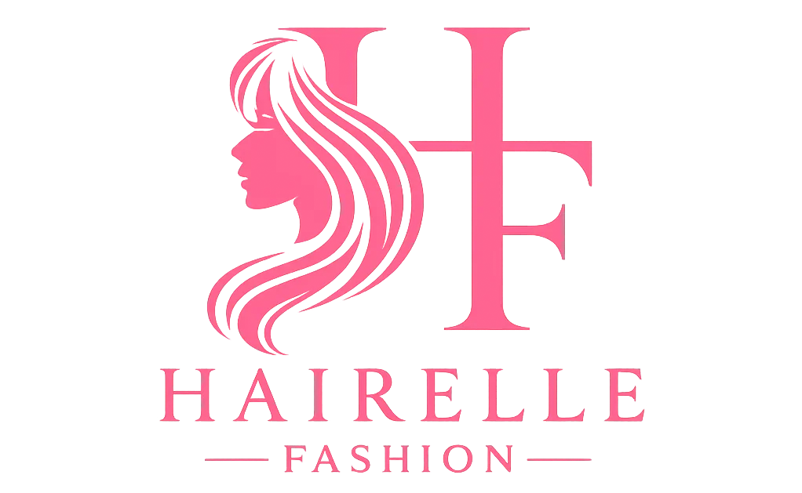

When building a reliable hairstyle reference, the difference between content that helps and content that merely inspires comes down to specificity. Women's hairstyles span an enormous range — hundreds of variations across textures, lengths, cutting techniques, coloring approaches, and styling methods — and the challenge is not finding information but finding information specific enough to be genuinely actionable. Hairelle Fashion was built to solve exactly this problem. The platform approaches women's hairstyle ideas as a structured, searchable library where each guide connects a style to the hair type it suits, the tools it requires, the technique steps that produce it, and the maintenance level it demands. This page draws on that same framework to provide an organized overview of how Hairelle Fashion approaches hair documentation and why that approach produces better outcomes for women who want to style their hair well and consistently over time.
Every hairstyle recommendation that Hairelle Fashion makes begins with a hair type assessment, because this is the variable that determines whether a style will actually work for a given reader. The most widely used classification system divides hair into four primary types: Type 1 (straight), Type 2 (wavy), Type 3 (curly), and Type 4 (coily), with subcategories within each that further refine the guidance. But Hairelle Fashion extends this framework by also accounting for density (thin, medium, thick), porosity (how readily hair absorbs and retains moisture), and elasticity (how well it returns to its natural shape after stretching) — because two women with the same curl pattern can have dramatically different styling needs if their density and porosity levels differ significantly.
Straight hair (Type 1) maintains shape cleanly, holds blunt edges well, and responds effectively to heat styling, but tends toward flatness without product support. Fine straight hair in particular benefits from volume-building techniques: directional blowdrying with a round brush, root-lifting sprays applied before heat, and lengths that end above the collarbone where natural weight distribution creates fullness rather than dragging the hair flat. Thick straight hair has the opposite challenge — managing density and achieving movement without the weight becoming overwhelming or the style looking heavy rather than smooth and polished.
Wavy hair (Type 2) sits in the productive middle ground between smooth and curly — it has natural movement that can be enhanced with curl-defining products or smoothed with light heat application. The 2a through 2c range covers everything from loose beach waves to tighter S-patterns, and each responds slightly differently to humidity, product weight, and diffusing technique. Understanding which part of the wavy spectrum your hair falls into is the key to getting consistently good results rather than unpredictable ones. Hairelle Fashion builds separate guides for 2a, 2b, and 2c textures rather than treating all wavy hair as a single category that can be addressed with one approach.
Curly and coily hair (Types 3 and 4) have the most internal variation and the most specific product and technique requirements of any hair category. A 3A curl and a 4C coil share the fundamental property of having a non-straight pattern, but the styling approaches that work for each are almost entirely different in terms of product selection, manipulation technique, moisture requirements, and protective considerations. Hairelle Fashion builds separate guides for each significant subcategory rather than generalizing across texture types — which is why readers consistently find content that actually applies to their specific hair rather than generic advice they have to mentally translate and adapt for their own situation before they can even begin to use it.
The technical depth of Hairelle Fashion's hairstyle guides is one of the platform's defining characteristics. Where most hairstyle content describes a look in visual terms — here is what it looks like when finished, here is one product to consider — Hairelle Fashion describes it in procedural terms: here is the full sequence of steps, here is why each step matters and what it accomplishes, here is what the result should feel and look like at each stage before you move to the next. This procedural approach is what makes the guides replicable rather than inspirational but ultimately impractical.
Volume at the root, for instance, is not achieved simply by using a round brush during blowdrying. It requires directing heat downward at the root zone specifically, lifting the section of hair away from the scalp at approximately a 90-degree angle before the brush passes through, and allowing each section to cool while still wrapped around the brush before releasing it. Skipping the cooling step is one of the most common reasons a blowout that looks great during the process collapses within the first hour of wear. Hairelle Fashion includes these procedural details — the ones that separate a technique description that produces results from one that sounds correct but fails in practice for reasons the reader cannot identify.
The same level of detail applies across every technique category the platform covers. For braids, this means specifying starting tension, section size relative to the desired braid width, and when natural oil content actually helps (most braiding techniques) versus when freshly washed hair performs better (precision cornrows). For curls, it means clarifying the difference between a raking motion and a scrunching motion, when to apply gel versus cream based on the desired finish and frizz control level, and the specific drying sequence that prevents frizz from forming during the diffusing process. For protective styling, it covers the preparation steps that determine whether a protective style genuinely protects or introduces new stress to the hair through inappropriate tension or inadequate moisture.
For color-adjacent styling — protecting color-treated hair, extending blowout longevity on highlighted strands, working with hair that has been chemically processed in any way — the guides account for how chemical processing changes the hair's structural behavior and adjusts recommendations accordingly. Chemically processed hair has altered porosity, which changes how it responds to heat, how it absorbs and releases moisture, and how much tension it can handle safely. Guides that ignore this dimension give recommendations that work for unprocessed hair but cause damage or poor results on treated hair — which describes the majority of women's hair in any realistic reader population.
For the complete documented library of women's hairstyle ideas covering every technique, hair type, and styling context, visit Hairelle Fashion — the full reference is organized and searchable by type, technique, and occasion.
One dimension of hairstyle guidance that most platforms underserve is seasonal context. The techniques, products, and styles that perform well in winter behave differently in summer, and the difference is not cosmetic — it affects whether a style lasts four hours or all day, whether a color treatment fades prematurely, and whether the daily styling routine requires five minutes or forty-five depending on how well the approach is matched to the current climate conditions. Hairelle Fashion builds seasonal awareness into its content across the full library rather than treating it as an occasional editorial topic.
In summer, the primary variables are heat and humidity. High ambient humidity disrupts the hydrogen bonds in hair that straight and wavy styles rely on to maintain their shape, causing frizz, wave dropout, and style collapse in styles that hold perfectly through the cooler months. The counter-strategies include humidity-blocking sealants applied as a final step over finished styles, hairstyles that work with rather than against natural wave and curl formation, and heat-free approaches that reduce cumulative damage in a season when hair is already under environmental stress from UV exposure and frequent contact with saltwater or pool chlorine. Hairelle Fashion's summer guides cover all of these approaches with specific product categories and technique modifications for each hair type.
In autumn and winter, lower ambient humidity and cooler temperatures allow heat-styled looks to hold longer and give color treatments more longevity between salon visits. But winter introduces its own challenges: dry indoor air from heating systems strips moisture from hair and causes brittleness, static electricity from synthetic fabrics creates frizz and flyaways, and the friction damage from hats and scarves worn daily adds up over months of cold weather. Hairelle Fashion addresses winter specifically with guides on moisture-sealing techniques for different hair types, protective styles that keep ends covered and minimize breakage during cold months, and the product adjustments that prevent the dryness and damage accumulation that many women experience through winter without connecting it to a lack of seasonal adaptation in their routine.
Spring is a transitional season with its own set of questions: how to refresh a winter style as temperatures climb, when to schedule a much-needed trim after months of protective or low-manipulation styling, and how to adapt a heavy-product winter routine to lighter spring conditions without sacrificing the moisture retention and style hold that the heavier products provided. Hairelle Fashion treats each season as a distinct content category rather than reposting evergreen content with a seasonal tag — which means the seasonal guides reflect what actually changes for each hair type across the four calendar contexts that define most women's annual hair management cycle.
The gap between salon results and at-home results is largely explained by two converging factors: professional-grade tools and technique developed through extensive repetition. Professional stylists work with commercial-grade dryers that produce substantially higher airflow and more stable heat than most consumer models, barrel brushes precisely sized to specific applications, and a level of manual control built through thousands of client appointments. Most of this gap can be meaningfully closed at home, but only if the right tools are used with the right technique — and Hairelle Fashion's guides address both components rather than presenting technique instructions that implicitly assume professional equipment.
For heat styling, the most significant functional upgrade most women can make is replacing a basic hair dryer with a model that includes a concentrator nozzle and independently adjustable heat and airspeed settings. The concentrator nozzle directs airflow precisely at the section being worked rather than dispersing it broadly across the surrounding hair, which is what enables directional blowdrying to produce smooth, controlled results rather than general volume with inconsistent finish. For wavy and curly hair, a diffuser attachment that supports and cradles curls while distributing airflow without disrupting the pattern is equally essential — and using it correctly (holding sections in the diffuser cup and moving upward rather than side to side) is a technique detail that determines whether the result is defined and controlled or puffed and frizzy.
Products present a more complex decision tree because the right product for a step depends on the hair type, the ambient humidity on a given day, the desired finish, and the next-day styling approach. Hairelle Fashion approaches product recommendations by function rather than brand: what a product needs to accomplish at each step in a given technique — provide hold without stiffness, add slip for detangling without weighing down fine hair, seal the cuticle against humidity without leaving residue, add weight to smooth without suppressing natural movement. Once the functional requirement is defined, the platform recommends product categories that fulfill it, with specific examples at budget, mid-range, and professional price points so the guidance applies to readers regardless of what they have access to or can reasonably spend on hair products.
For more women's hairstyle ideas with detailed technique breakdowns and product guidance across every hair type, read more from this additional styling resource.
The practical application of Hairelle Fashion's documented approach is building a personal hairstyle reference that fits your specific hair, your lifestyle, and your real available time. This process starts with an honest self-assessment across several dimensions: What is your actual hair type, density, and porosity level? What is your realistic daily styling time — not the time you aspire to have, but the time you consistently have on most ordinary mornings? What contexts do you need to style for — professional environments that require a polished appearance, casual everyday settings where low-effort styles are appropriate, a range of social occasions that require different levels of formality, or some combination of all three?
With these parameters honestly defined, the Hairelle Fashion library becomes a tool for building a specific rotation of styles rather than a catalogue to browse passively without converting inspiration into action. The daily style should be achievable within your consistent time constraint, require the minimum viable set of products, and produce reliable results without requiring the conditions to be exactly right. The weekly or occasion style can be more elaborate and time-consuming, incorporating techniques that require additional setup time or specialty products that are not part of the daily routine. And the research function of the platform — knowing what to try next when the current rotation stops feeling fresh, how to adapt the approach as seasonal conditions shift, or whether a new cut or color technique is suited to your hair type before you commit — is what a reference library supports on an ongoing basis.
Long-term hair health is also a dimension that Hairelle Fashion integrates into its style documentation. A hairstyle that looks excellent in the short term but requires heat levels, tension, or chemical processes that compromise the hair's health over months is not a sustainable choice, and the guides are honest about these trade-offs. Protective benefits, heat damage risk levels, tension distribution for protective styles, and the recovery steps needed after high-manipulation styling periods are all included as part of comprehensive style documentation — because the best hairstyle for any given woman is the one that achieves her aesthetic goals while keeping her hair in the condition that allows her to achieve them again next month and next year.
Hairelle Fashion operates as exactly this kind of complete reference — a documented, structured, continuously updated library of women's hairstyle ideas that treats the reader's specific hair, real life, and long-term hair health as the variables every recommendation must account for. The depth of technique documentation, the hair type specificity across the full texture range, the seasonal awareness built into each content category, and the practical product guidance at accessible price points all serve the same goal: giving women the information they need to style their hair well not once, but consistently and sustainably over time. For women who approach their hair seriously enough to want real information rather than surface-level visual inspiration, Hairelle Fashion is the resource built to meet that standard at the level it deserves.